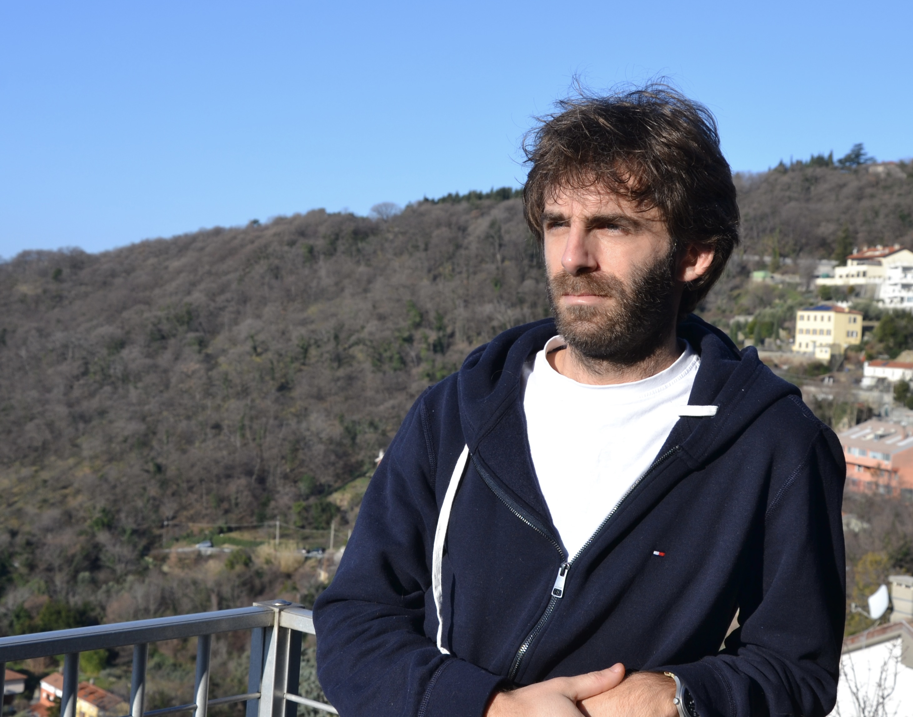

I am associate professor at SISSA, Trieste, in the group
Geometry and Mathematical Physics.
Here is my CV.
I work in Algebraic Geometry, mostly on enumerative geometry of moduli spaces of sheaves and their invariants.
I am also interested in moduli spaces of curves, derived categories of coherent sheaves,
semiorthogonal decompositions and Fourier–Mukai transforms. Here are my coauthors.
Permanent activities
Past events